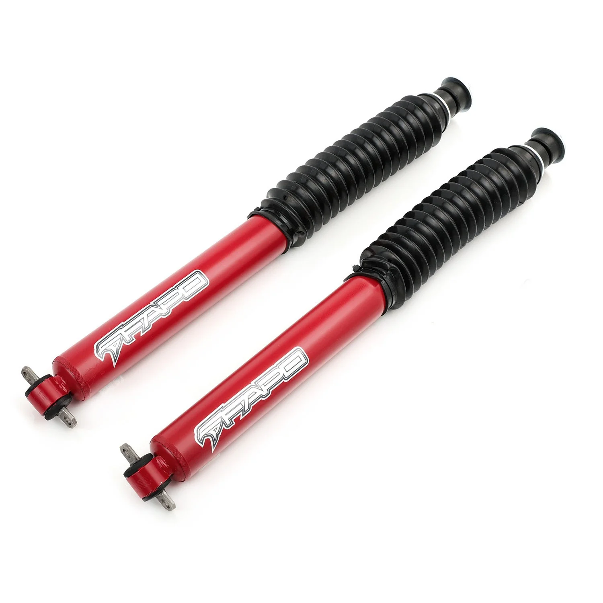

1 / 11P1 off-road przedni amortyzator Do JEEP CHEROKEE XJ 1984 - 2001 3.5-4.5 in lift PA160710
Pakowanie i dostawa Jednostki sprzedaży: Pojedynczy przedmiot Rozmiar opakowania: 57×18×10 cm Waga brutto: 6 kg Zawartość opakowania: 2 amortyzatory przednie 1 karta gwarancyjna Montaż JEEP CHEROKEE XJ 1984-2001 (podnośnik 3,5-4,5") Cechy Korpus amortyzatora o średnicy 54 mm zapewnia szybsze odprowadzanie ciepła Tłok 32 mm z chromowanym, hartowanym tłoczyskiem 16 mm Tłumienie bez możliwości regulacji Korpus amortyza…
Packaging & Delivery Selling Units: Single item Package Size: 57×18×10 cm Gross Weight: 6 kg Package Contents: 2 front shock absorbers 1 warranty card Fitment JEEP CHEROKEE XJ 1984-2001 (3.5-4.5" lift) Features 54mm shock body for faster heat dissipation 32mm piston with chromed hardened 16mm piston rod Non-adjustable damping Red painted shock body Rubber bushings for better vibration absorption Easy installation with proper tools Ideal for track, drift, performance road and daily driving 1-year manufacturer warranty Technical Specifications Rear Extended length: 24.45" Collapsed length: 14.76"
999,99 PLN
Opis produktu
Pakowanie i dostawa
- Jednostki sprzedaży:Pojedynczy przedmiot
- Rozmiar opakowania:57×18×10 cm
- Waga brutto:6 kg
-
Zawartość opakowania:
- 2 amortyzatory przednie
- 1 karta gwarancyjna
Montaż
- JEEP CHEROKEE XJ 1984-2001 (podnośnik 3,5-4,5")
Cechy
- Korpus amortyzatora o średnicy 54 mm zapewnia szybsze odprowadzanie ciepła
- Tłok 32 mm z chromowanym, hartowanym tłoczyskiem 16 mm
- Tłumienie bez możliwości regulacji
- Korpus amortyzatora malowany na czerwono
- Gumowe tuleje dla lepszej absorpcji drgań
- Łatwa instalacja przy użyciu odpowiednich narzędzi
- Idealny na tor, drift, wyczynową drogę i codzienną jazdę
- 1 rok gwarancji producenta
Dane techniczne
Tył
- Rozszerzona długość: 24,45"
- Długość po złożeniu: 14,76"
Packaging & Delivery
- Selling Units: Single item
- Package Size: 57×18×10 cm
- Gross Weight: 6 kg
-
Package Contents:
- 2 front shock absorbers
- 1 warranty card
Fitment
- JEEP CHEROKEE XJ 1984-2001 (3.5-4.5" lift)
Features
- 54mm shock body for faster heat dissipation
- 32mm piston with chromed hardened 16mm piston rod
- Non-adjustable damping
- Red painted shock body
- Rubber bushings for better vibration absorption
- Easy installation with proper tools
- Ideal for track, drift, performance road and daily driving
- 1-year manufacturer warranty
Technical Specifications
Rear
- Extended length: 24.45"
- Collapsed length: 14.76"
FAPO Polska
Ten produkt obsługujemy lokalnie
Autoryzowana obsługa
FAPO Polska prowadzi katalog, kontakt i zamówienia bez odsyłania klienta do zewnętrznych sklepów.
Dobór po aucie
Sprawdzamy dopasowanie produktu do pojazdu, rocznika i wersji przed finalizacją zamówienia.
Wsparcie po zakupie
Masz kontakt w Polsce w sprawach zamówień, wysyłki, gwarancji i zwrotów.